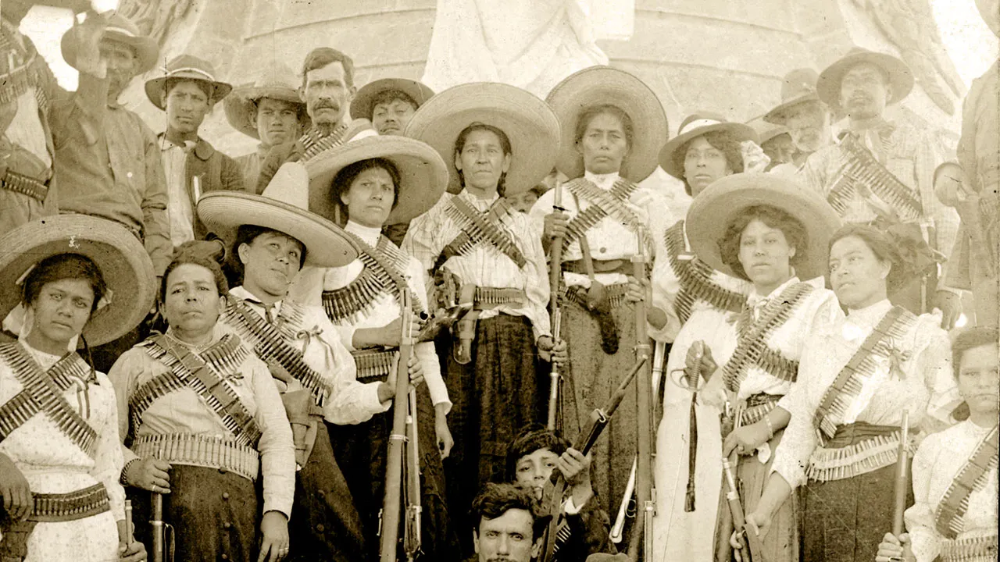
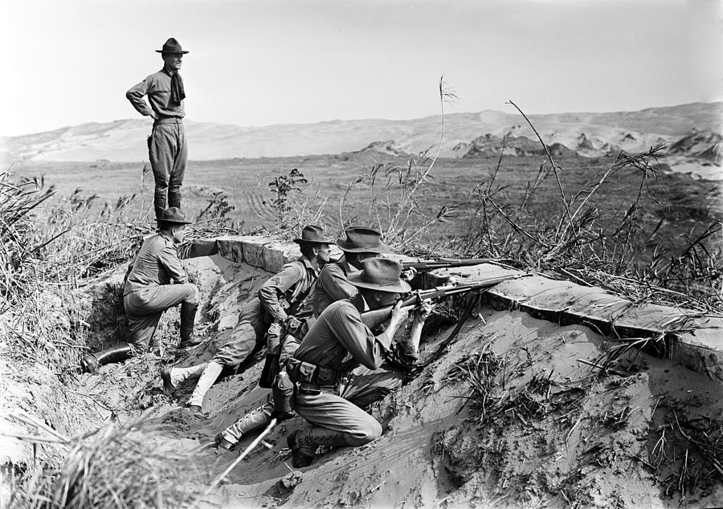

Introducción
El conflicto armado que se dio entre 1910-1917 se inició como una lucha en contra de la perpetuación en el poder del general Porfirio Díaz, pero derivó en una guerra civil entre facciones que luchaban por la "auténtica revolución".
Diferentes grupos que tenían como bandera derechos políticos y sociales se unieron por ese objetivo, pero luego llevaron a cabo una guerra de guerrillas a lo largo de una de las épocas más convulsas para México, que dejó más de un millón de muertos.

